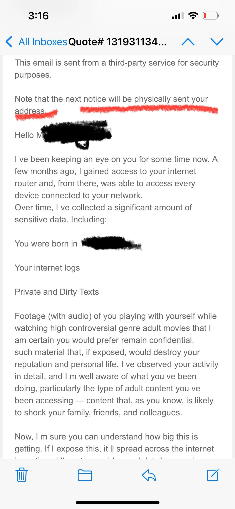
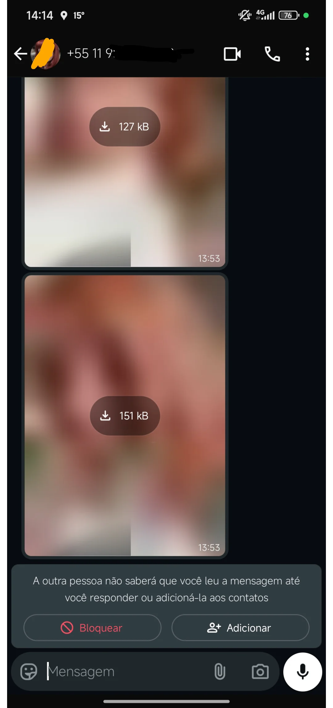

Galeria de Exemplos
| Exemplo | Análise |
|---|---|
 |
Neste exemplo, o atacante tenta causar danos emocionais a vítima através da ameaça de ter acesso ao computador da mesma e ter vídeos comprometedores, além de mensagens e outros. Note que o atacante usou o local onde a vítima nasceu (borrado visto que a imagem foi obtida no reddit), por estar borrado, é provavelmente o local real onde a vítima nasceu. O texto foi cortado, mas provavelmente ao final do e-mail o atacante solicitará dinheiro em troca de silêncio. |
 |
Neste exemplo a vítima recebeu algumas imagens de um número desconhecido. Quando postou este print, na intenção de saber se se tratava de um golpe, a vítima comentou que não chegou a baixar as imagens. Isso porque, mesmo censuradas, pareciam improprias. O print em questão se trata de um golpe no qual, caso a vítima mande mensagem perguntando o que é aquilo ou algo do tipo, receberá uma ameaça sob o argumento de ter “mexido” com a mulher da foto. |
| Neste exemplo a vítima recebeu uma mensagem de um número desconhecido que tenta se passar pela empresa iFood e oferece um cupom de dois mil reais. Note que na mensagem contem um link, este que provavelmente vai encaminhar a vítima para uma página de login e tentará roubar informações. Muito provavelmente o objetivo deste golpe é roubar dados e não dinheiro (pelo menos a primeira vista). Mas no futuro estes dados podem ser usados para extorquir a vítima e pessoas próximas dela. | |
| Neste exemplo o criminoso tenta coagir a vítima a enviar informações sigilosas utilizando de engenharia social e técnicas de persuasão. A vítima comete o erro de dizer que tem família e o atacante utilizada deste deslize para a ameaçar. | |
| Nesta imagem observa-se um tipo extremamente exotico de phishing. O atacante contrata o serviço do Google ads e utiliza uma thumb extremamente alarmante. A imagem do anúncio simula um pop-up que diz que o usuário foi hackeado e o hacker está roubando seus dados, note que o fundo da imagem simula a hub do YouTube. Isso tudo na intenção de que o usuário aperte e o link provavelmente o levara para outra página ainda mais alarmante. Caso nunca tenha visto um golpe desse, não estranhe, esse print foi tirado pelo celular da avó de um dos autores deste site, ou seja, observe o público alvo deste golpe. |